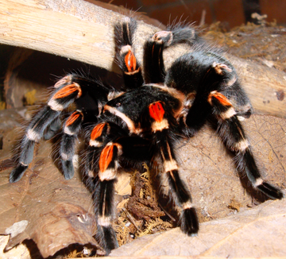
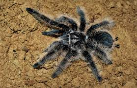
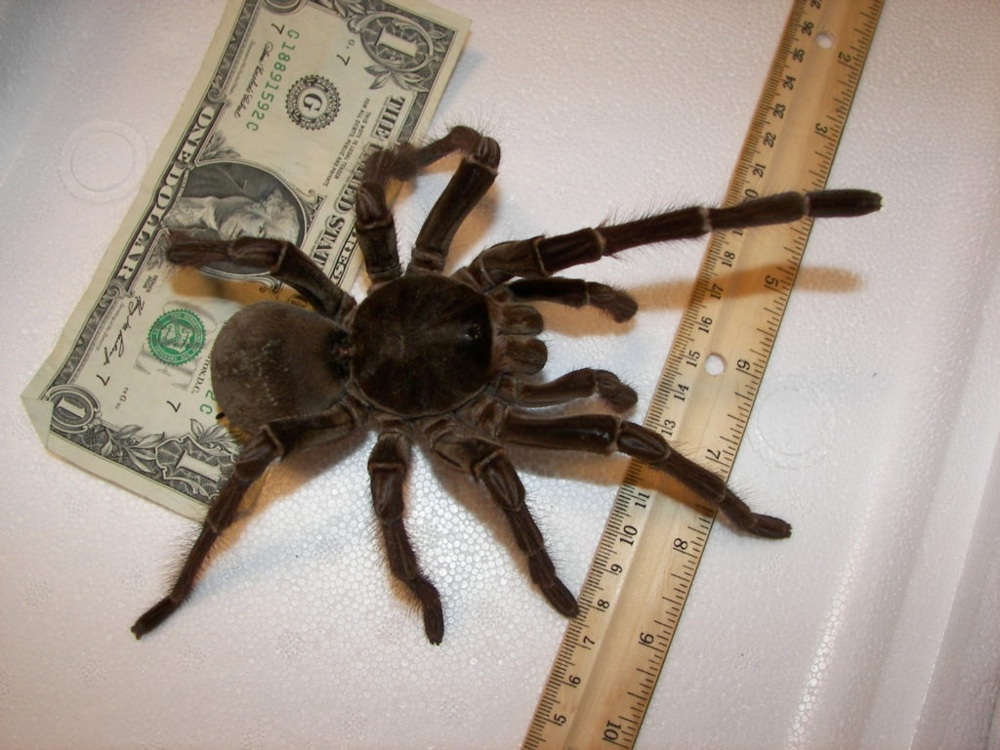
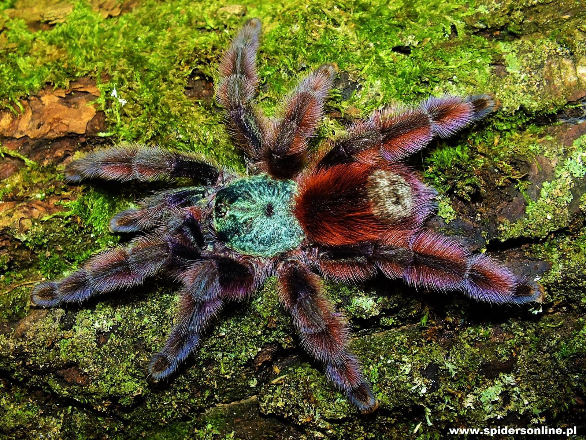
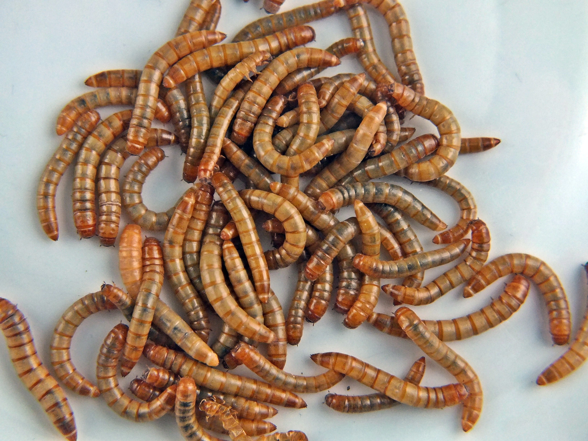

Ptasznikowate (Theraphosidae)
Rodzina pająków z podrzędu Opisthothelae i infrarzędu ptaszników (Mygalomorphae). Obejmuje ok. 950 gatunków najczęściej dużych pająków o bardzo różnorodnym ubarwieniu.
Strona o ptasznikach utworzona w celach edukacyjnych
Tliltocatl (ex. Brachypelma)
Rodzaj ptaszników naziemnych występujących w Ameryce Środkowej i Ameryce Południowej. Zamieszkują zarówno wilgotne lasy tropikalne, jak i rejony półpustynne (okolice Meksyku). Są to masywne ptaszniki, osiągają 5–8 cm długości samego ciała. Charakteryzuje je aktywność nocna, i zazwyczaj w nocy opuszczają swoje wykopane w ziemi norki w poszukiwaniu pożywienia. Chętnie też wprowadzają się do nor wykopanych przez gryzonie. Miejsca w których żyją są dosyć ciepłe (22–29 °C), jednak mają zróżnicowaną wilgotność. W przypadku ptaszników zamieszkujących półpustynne obszary wilgotność ta nie będzie wyższa niż 50–60%. Natomiast u zwierząt żyjących w dżungli niejednokrotnie jest ona wyższa niż 80%. Ptaszniki z rodzaju Brachypelma są długowieczne i nierzadko notuje się długość życia u samicy 19–20 lat. Samiec umiera zwykle po roku od ostatniego linienia, co najczęściej ma miejsce po około 3 latach od wyklucia. Zwierzęta te w naturze odżywiają się bezkręgowcami (zaczynając od larw owadów, karaczanów, szarańczy i świerszczy, a kończąc na przedstawicielach własnego gatunku). W skład ich diety wchodzą też kręgowce, tj. myszy, jaszczurki, a nawet młode węże.
Tliltocatl auratum

Tliltocatl albopilosum nicaragua

Theraphosa blondi (Goliat)
Masa dorosłego osobnika wynosi do 250 g, a rozstaw odnóży do około 30 cm. Samice są wyraźnie większe od samców. Najczęściej występują osobniki brązowe, istnieją również formy czarne. Jad nie jest zagrożeniem dla życia lub zdrowia dorosłego człowieka. Należy jednak wziąć pod uwagę nieprzyjemne w skutkach ukąszenie pazurami jadowymi dorastającymi do 2,5 cm. Po ukąszeniu najczęściej pojawiają się wymioty, nudności, bóle głowy, gorączka oraz skurcze mięśni (czasem występujące na długo po ukąszeniu). Dość często przejawia agresję. Ze względu na swoje rozmiary i wagę, podrośnięte i dorosłe osobniki mają kłopoty ze wspinaniem się po pionowych powierzchniach.

Caribena versicolor (Ptasznik wielobarwny)
Caribena versicolor - ptasznik wielobarwny to jeden z najpopularniejszych pająków w hodowlach. W naturze występuje w lasach deszczowych Martyniki. Jest to gatunek nadrzewny, ruchliwy, skoczny, nadający się na rozpoczęcie przygody z hodowlą ptaszników.
Maluchy są niebieskie, przy 6 wylince kolor zaczyna się zmieniać. Około 7-9 wylinki pojawia się fioletowy, z czerwonymi akcentami i czerwonym odwłokiem. Dorosłe osobniki są czerwone, z zielonkawym karapaksem. Samice dożywają 5-6 lat, samce minimum pół roku po ostatniej wylince.

Mącznik młynarek (Tenebrio molitor)
chrząszcz z rodziny czarnuchowatych. Owad dorosły osiąga rozmiar 12–20 mm, larwa – 30 mm.
Występuje w produktach zbożowych (synantrop, ważny szkodnik), a także w gniazdach ptaków i pod korą drzew liściastych. Żeruje w niehigienicznie utrzymywanych magazynach zboża i mąki. Tak owad, jak i larwa atakują mąkę, otręby, suchary i inne produkty zbożowe[2].
Mączniki hodowane są jako pokarm na potrzeby terrarystyki (żywi się nimi m.in. wiele gatunków jaszczurek, np. stanowi podstawę diety w hodowli gekonów lamparcich, oraz wiele gatunków drapieżnych bezkręgowców) i wędkarstwa jako przynęta. Jest jednym z najłatwiejszych do hodowli owadów.

wkrótce pojawią się informacje o terrariach
wkrótce pojawią się informacje o akcesoriach
wkrótce pojawią się informacje o wystroju
wkrótce pojawią się informacje o ogrzewaniu